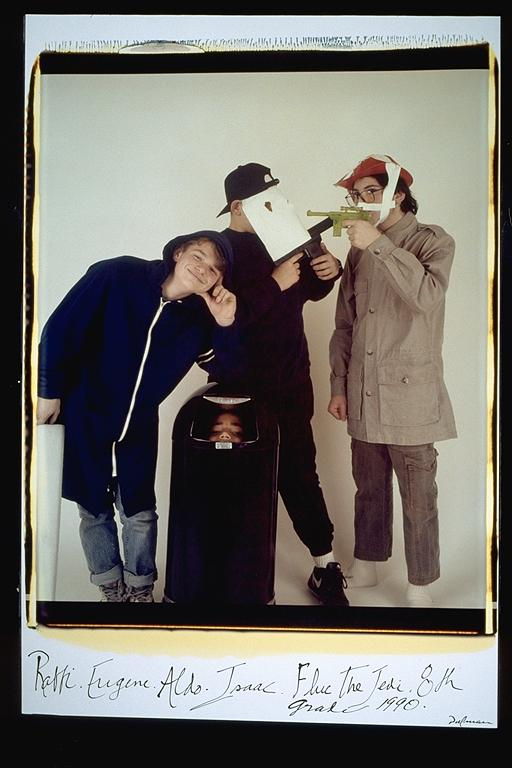

Pals: Boys Who Grew Up Together
elsadorfman.com/pals
Aldo: Rafi and Isaac starting their filming career at an early age. They formed a group called RAIAW, which was their group. But later they began making short films. These are the main characters for the feature film, "Fluke the Jedi." It was a lot of fun filming these movies. We were really young and so it was not like we could have anything else more productive. I have not seen the tapes in many years, and if Isaac wants to remain healthy, he will keep it this way. My biggest concern is understanding more about my childhood than I want to know.

elsad@comcast.net